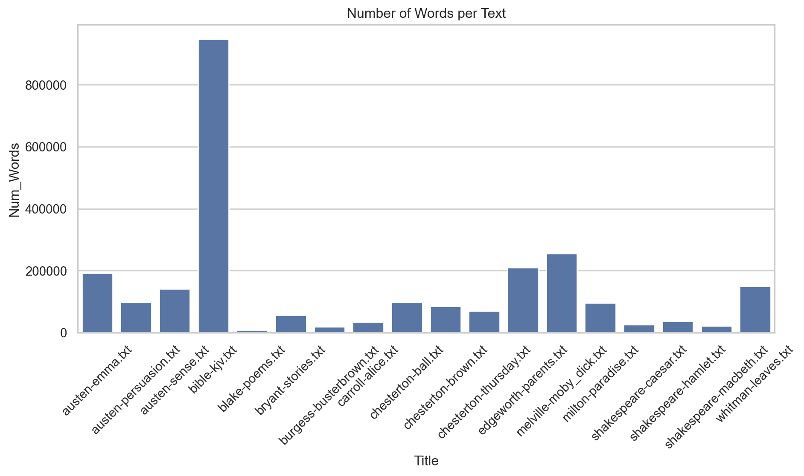
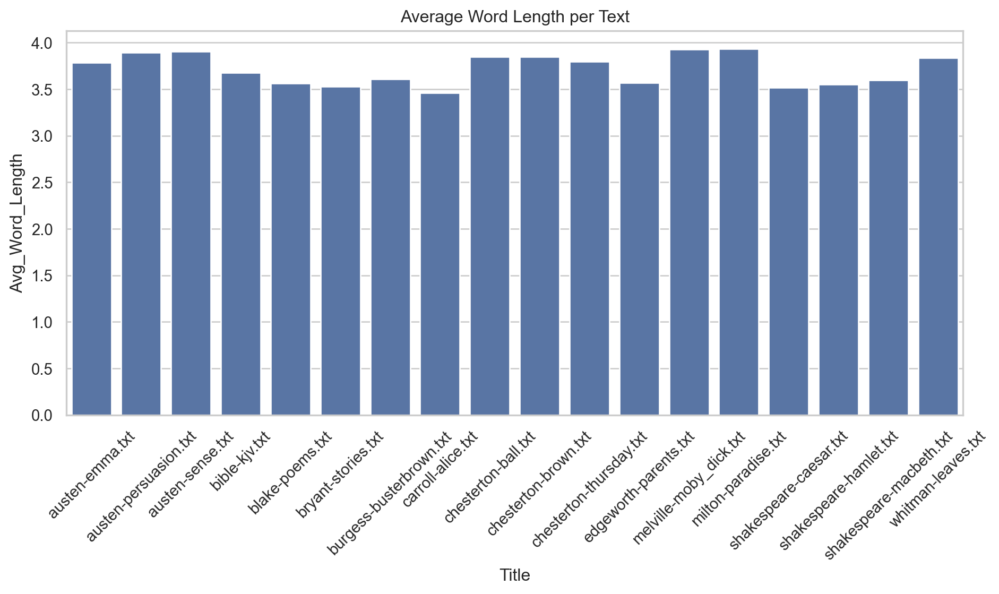
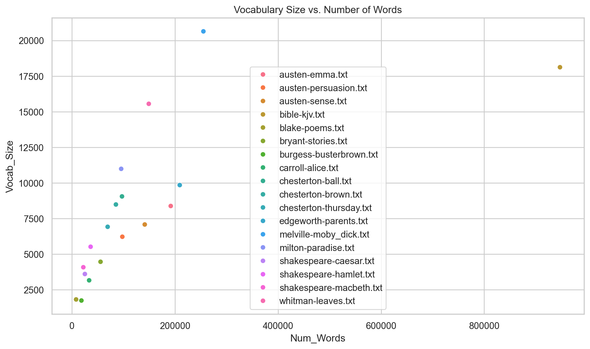

# run inside google colab
#!git clone https://github.com/cca-cce/osm-cca-nlp.gitreading text content
- code examples nltk
- code examples spacy
- download jupyter notebook
recap reading data files
import pandas as pd
# comma separated
df = pd.read_csv('users.csv', sep=',', quotechar='"', header=0)
#df = pd.read_csv('users.csv', sep=',', quotechar='"', header=None)
#df = pd.read_csv('users.csv', sep=',', quotechar="'", header=0)
#df = pd.read_csv('users.csv', sep=',', quotechar="'", header=None)
#df = pd.read_csv('users.csv', sep='\t', quotechar='"', header=0)
#df = pd.read_csv('users.csv', sep='\t', quotechar='"', header=None)
#df = pd.read_csv('users.csv', sep='\t', quotechar="'", header=0)
#df = pd.read_csv('users.csv', sep='\t', quotechar="'", header=None)
# tab separated
#df = pd.read_csv('users.tsv', sep=',', quotechar='"', header=0)
#df = pd.read_csv('users.tsv', sep=',', quotechar='"', header=None)
#df = pd.read_csv('users.tsv', sep=',', quotechar="'", header=0)
#df = pd.read_csv('users.tsv', sep=',', quotechar="'", header=None)
df = pd.read_csv('users.tsv', sep='\t', quotechar='"', header=0)
#df = pd.read_csv('users.tsv', sep='\t', quotechar='"', header=None)
#df = pd.read_csv('users.tsv', sep='\t', quotechar="'", header=0)
#df = pd.read_csv('users.tsv', sep='\t', quotechar="'", header=None)
# excel
#df = pd.read_excel('users.xlsx', header=0, sheet_name=1)
#df = pd.read_excel('users.xlsx', header=None, sheet_name=1)
df.head()nltk and text corpora
Import Libraries and Download NLTK Data
In this step, we import the necessary libraries and download the required NLTK data packages. Specifically, we use NLTK’s download function to ensure the ‘gutenberg’ corpus and the ‘punkt’ tokenizer are available for use. The ‘punkt’ tokenizer is essential for splitting text into sentences and words.
import nltk
import pandas as pd
import seaborn as sns
import matplotlib.pyplot as plt
import os
from IPython.display import display
# Download necessary NLTK data files
nltk.download('gutenberg')
nltk.download('punkt')
nltk.download('punkt_tab')TrueLoad the Gutenberg Corpus
Here, we import the Gutenberg corpus from NLTK’s corpus module. The Gutenberg corpus is a collection of literary texts that we will analyze. We retrieve the list of file IDs available in the corpus using gutenberg.fileids(), which provides us with the filenames of the texts in the corpus.
from nltk.corpus import gutenberg
# Get list of file IDs from the Gutenberg corpus
file_ids = gutenberg.fileids()Analyze Each Text in the Corpus
In this section, we iterate over each text in the Gutenberg corpus to compute various linguistic statistics. We use NLTK’s raw() method to get the raw text, word_tokenize() to split the text into words, and sent_tokenize() to split the text into sentences. These NLTK tokenizers are essential for textual analysis.
# Initialize a list to store statistics
stats_list = []
# Analyze each text in the corpus
for file_id in file_ids:
raw_text = gutenberg.raw(file_id)
words = nltk.word_tokenize(raw_text)
sentences = nltk.sent_tokenize(raw_text)
num_words = len(words)
num_sentences = len(sentences)
avg_word_length = sum(len(word) for word in words) / num_words
vocab_size = len(set(words))
lexical_diversity = vocab_size / num_words
stats_list.append({
'Title': file_id,
'Num_Words': num_words,
'Num_Sentences': num_sentences,
'Avg_Word_Length': avg_word_length,
'Vocab_Size': vocab_size,
'Lexical_Diversity': lexical_diversity
})Create and Display the DataFrame
We create a pandas DataFrame from the collected statistics for easier analysis and display it within the notebook using display(). This allows us to view the computed statistics in a structured tabular format.
# Create a DataFrame to hold the statistics
stats_df = pd.DataFrame(stats_list)
# Display the statistics table
display(stats_df)| Title | Num_Words | Num_Sentences | Avg_Word_Length | Vocab_Size | Lexical_Diversity | |
|---|---|---|---|---|---|---|
| 0 | austen-emma.txt | 191855 | 7493 | 3.788288 | 8376 | 0.043658 |
| 1 | austen-persuasion.txt | 97940 | 3654 | 3.896130 | 6218 | 0.063488 |
| 2 | austen-sense.txt | 141440 | 4833 | 3.906908 | 7078 | 0.050042 |
| 3 | bible-kjv.txt | 947008 | 29812 | 3.679540 | 18120 | 0.019134 |
| 4 | blake-poems.txt | 8239 | 355 | 3.562690 | 1815 | 0.220294 |
| 5 | bryant-stories.txt | 55649 | 2715 | 3.526982 | 4460 | 0.080145 |
| 6 | burgess-busterbrown.txt | 18571 | 1001 | 3.608906 | 1739 | 0.093641 |
| 7 | carroll-alice.txt | 33535 | 1625 | 3.462711 | 3157 | 0.094140 |
| 8 | chesterton-ball.txt | 97277 | 4624 | 3.849430 | 9050 | 0.093033 |
| 9 | chesterton-brown.txt | 85489 | 3712 | 3.849747 | 8482 | 0.099217 |
| 10 | chesterton-thursday.txt | 69443 | 3588 | 3.800081 | 6916 | 0.099592 |
| 11 | edgeworth-parents.txt | 209310 | 10096 | 3.568989 | 9845 | 0.047035 |
| 12 | melville-moby_dick.txt | 255222 | 9852 | 3.926444 | 20639 | 0.080867 |
| 13 | milton-paradise.txt | 95716 | 1835 | 3.932947 | 10986 | 0.114777 |
| 14 | shakespeare-caesar.txt | 25277 | 1592 | 3.519880 | 3601 | 0.142462 |
| 15 | shakespeare-hamlet.txt | 36411 | 2355 | 3.554008 | 5515 | 0.151465 |
| 16 | shakespeare-macbeth.txt | 22274 | 1465 | 3.600072 | 4076 | 0.182994 |
| 17 | whitman-leaves.txt | 149249 | 3827 | 3.835972 | 15552 | 0.104202 |
Set Up the Output Directory
Here, we define the output path where we’ll save the text files and figures. We use os.makedirs() with exist_ok=True to create the directory if it doesn’t already exist, ensuring that our output files have a designated location.
# Define the output path for saving text files and figures
output_path = "/home/sol-nhl/rnd/d/quarto/osm-cca-nlp/tmp"
# Create the output directory if it doesn't exist
os.makedirs(output_path, exist_ok=True)Generate and Display Plots
In this step, we create various plots to visualize the text statistics using Seaborn and Matplotlib. We display these plots inline in the notebook using plt.show(). The plots include:
- A bar plot of the number of words per text.
- A bar plot of the average word length per text.
- A scatter plot of vocabulary size versus the number of words.
We utilize NLTK’s tokenization outputs to extract the necessary values for plotting.
# Set up seaborn style
sns.set(style='whitegrid')
# Bar plot of number of words per text
plt.figure(figsize=(10, 6))
sns.barplot(x='Title', y='Num_Words', data=stats_df)
plt.xticks(rotation=45)
plt.title('Number of Words per Text')
plt.tight_layout()
plt.savefig(os.path.join(output_path, 'num_words_per_text.png'))
plt.show()
# Bar plot of average word length per text
plt.figure(figsize=(10, 6))
sns.barplot(x='Title', y='Avg_Word_Length', data=stats_df)
plt.xticks(rotation=45)
plt.title('Average Word Length per Text')
plt.tight_layout()
plt.savefig(os.path.join(output_path, 'avg_word_length_per_text.png'))
plt.show()
# Scatter plot of vocabulary size vs. number of words
plt.figure(figsize=(10, 6))
sns.scatterplot(x='Num_Words', y='Vocab_Size', data=stats_df, hue='Title')
plt.title('Vocabulary Size vs. Number of Words')
plt.legend(loc='best')
plt.tight_layout()
plt.savefig(os.path.join(output_path, 'vocab_size_vs_num_words.png'))
plt.show()


Save Texts to Disk
Finally, we save each text from the Gutenberg corpus as a plain text file to the specified output directory. We use NLTK’s raw() method again to retrieve the full text of each file and write it to disk using standard file I/O operations.
# Save each text as a plain text file to the output path
for file_id in file_ids:
raw_text = gutenberg.raw(file_id)
output_file_path = os.path.join(output_path, file_id)
with open(output_file_path, 'w', encoding='utf-8') as f:
f.write(raw_text)Load Saved Texts into an NLTK Corpus
In this final step, we read the saved texts from the output directory back into an NLTK corpus using PlaintextCorpusReader. This allows us to treat the collection of saved texts as a corpus for further analysis. PlaintextCorpusReader is an NLTK class designed to read plain text files from a directory and create a corpus object.
from nltk.corpus import PlaintextCorpusReader
# Define the corpus root directory
corpus_root = output_path
# Define the pattern to match the text files (e.g., all files with .txt extension)
file_pattern = '.*' # Matches all files
# Matches only text files
file_pattern = r'.*\.txt' # Matches all files ending with .txt
# Create a PlaintextCorpusReader object
new_corpus = PlaintextCorpusReader(corpus_root, file_pattern)
# Access the file IDs in the new corpus
new_file_ids = new_corpus.fileids()
print("Files in the new corpus:", new_file_ids)
# Example: Read words from a specific file
words_in_file = new_corpus.words(new_file_ids[0])
print("First 20 words in", new_file_ids[0], ":", words_in_file[:20])Files in the new corpus: ['austen-emma.txt', 'austen-persuasion.txt', 'austen-sense.txt', 'bible-kjv.txt', 'blake-poems.txt', 'bryant-stories.txt', 'burgess-busterbrown.txt', 'carroll-alice.txt', 'chesterton-ball.txt', 'chesterton-brown.txt', 'chesterton-thursday.txt', 'edgeworth-parents.txt', 'melville-moby_dick.txt', 'milton-paradise.txt', 'shakespeare-caesar.txt', 'shakespeare-hamlet.txt', 'shakespeare-macbeth.txt', 'whitman-leaves.txt']
First 20 words in austen-emma.txt : ['[', 'Emma', 'by', 'Jane', 'Austen', '1816', ']', 'VOLUME', 'I', 'CHAPTER', 'I', 'Emma', 'Woodhouse', ',', 'handsome', ',', 'clever', ',', 'and', 'rich']By using PlaintextCorpusReader, we can load all the saved text files into a new NLTK corpus. The fileids() method lists all the files in the corpus, and methods like words(), sents(), and paras() allow us to access words, sentences, and paragraphs, respectively. This demonstrates NLTK’s capability to handle custom corpora built from local text files, enabling further text processing and analysis on the newly created corpus.
text to pandas dataframe
- example sustainability communication
Import Libraries and Define Text Cleaning Function
In this step, we import the necessary libraries and define a function to clean text data. We use the os module for file and directory operations, re for regular expressions, pandas for data manipulation, and spacy for natural language processing tasks.
import os
import re
import pandas as pd
import spacy
!python -m spacy download en_core_web_sm
# Function to clean text by removing non-ASCII characters
def clean_text(text):
# Remove non-ASCII characters (commented out to preserve UTF-8 text)
# cleaned_text = re.sub(r'[^\x00-\x7F]+', '', text)
cleaned_text = text
return cleaned_textThe clean_text function is intended to remove non-ASCII characters using re.sub. However, since we are dealing with UTF-8 encoded text (e.g., Swedish text data), we retain the original text by commenting out the removal line.
Set Directory Paths and Initialize Data Structures
Here, we specify the directory paths where the text files are located and initialize data structures for storing the text data. The directory_path variable holds the path to the directory containing the text files. We also initialize an empty list data to store the text information and a counter unique_id for assigning unique identifiers to each text.
# Directory containing text files
directory_path = '/content/osm-cca-nlp/res'
directory_path = '/home/sol-nhl/rnd/d/quarto/osm-cca-nlp/res'
# Initialize an empty list to store the data
data = []
# Initialize a unique ID counter
unique_id = 1The os module functions will later use directory_path to access the files. The unique_id will increment for each file, ensuring each text has a unique identifier.
Read and Clean Text Files
In this section, we iterate over the text files in the specified directory, read their contents, clean the text using the clean_text function, and store the data in the data list. The os.listdir function lists all files in the directory, and os.path.join constructs the full file path.
# Iterate over the text files in the directory
for filename in os.listdir(directory_path):
# Consider only plain text files
if filename.endswith(".txt") or filename.endswith(".md"):
file_path = os.path.join(directory_path, filename)
# Read the file content
with open(file_path, 'r', encoding='utf-8') as file:
text = file.read()
# Clean the text
cleaned_text = clean_text(text)
# Append the data as a dictionary with a unique ID
data.append({
'id': unique_id,
'filename': filename,
'original_text': text,
'cleaned_text': cleaned_text
})
# Increment the unique ID
unique_id += 1We use open with encoding='utf-8' to read the files, ensuring that UTF-8 characters are handled correctly. The cleaned text and metadata are stored as dictionaries in the data list.
Create and Save DataFrame
We convert the collected data into a Pandas DataFrame for easier manipulation and analysis. We then save this DataFrame as a TSV (Tab-Separated Values) file using the to_csv method with sep='\t'. The index=False parameter ensures that the DataFrame index is not included in the output file.
# Create a Pandas DataFrame
text_df = pd.DataFrame(data)
# Save the DataFrame as a TSV file in the 'csv' subdirectory
output_file_path = '/content/osm-cca-nlp/csv/text_data.tsv'
output_file_path = '/home/sol-nhl/rnd/d/quarto/osm-cca-nlp/csv/text_data.tsv'
# Save the DataFrame to a TSV file
text_df.to_csv(output_file_path, sep='\t', index=False)
# Display the DataFrame
print(text_df) id filename \
0 1 strategy-sustainable-development-lund-universi...
1 2 lu-sustainability-communication-01-min.md
original_text \
0 Page 1\n\nSTRATEGY \n\n19 September 2019 \n\...
1 Your browser has javascript turned off or bloc...
cleaned_text
0 Page 1\n\nSTRATEGY \n\n19 September 2019 \n\...
1 Your browser has javascript turned off or bloc... This step utilizes Pandas’ data handling capabilities to structure our text data effectively and save it for future use.
Load spaCy Model
We load a spaCy language model to perform natural language processing tasks. The spacy.load function loads the specified model into memory. In this case, we use the small English model en_core_web_sm.
# Load the spaCy model (small English model is used here)
nlp = spacy.load("en_core_web_sm")The loaded nlp object provides access to spaCy’s powerful NLP features, including tokenization, part-of-speech tagging, and sentence segmentation.
Compute Text Statistics
We calculate word counts, character counts, and sentence counts for each cleaned text in the DataFrame. Pandas’ apply function applies a lambda function to each row in the cleaned_text column. For sentence counting, we use spaCy’s sentence segmentation by processing the text with nlp and accessing the .sents attribute.
# Perform word count and character count on each cleaned text in the DataFrame
text_df['word_count'] = text_df['cleaned_text'].apply(lambda x: len(x.split()))
text_df['character_count'] = text_df['cleaned_text'].apply(lambda x: len(x))
# Perform sentence count using spaCy
text_df['sentence_count'] = text_df['cleaned_text'].apply(lambda x: len(list(nlp(x).sents)))The len(x.split()) calculates the number of words by splitting the text on whitespace. The character count is obtained with len(x). For sentence count, we process the text with the spaCy model and convert the sents generator to a list to count the sentences.
Display DataFrame with Selected Columns
Finally, we display the DataFrame, excluding the ‘original_text’ and ‘cleaned_text’ columns for brevity. The columns.difference function identifies columns to exclude, and we use this to select the remaining columns for display.
# Select and print all columns except 'original_text' and 'cleaned_text'
columns_to_display = text_df.columns.difference(['original_text', 'cleaned_text'])
print(text_df[columns_to_display]) character_count filename id \
0 13359 strategy-sustainable-development-lund-universi... 1
1 9778 lu-sustainability-communication-01-min.md 2
sentence_count word_count
0 83 1848
1 80 1073 This step showcases the metadata and statistical information we’ve gathered, such as the unique ID, filename, word count, character count, and sentence count, without displaying the potentially lengthy text content.
Summary:
- os module: Used for interacting with the operating system, listing directory contents, and constructing file paths.
- re module: Provides regular expression matching operations for text cleaning (though in this code, the regex is commented out).
- pandas: Used for creating and manipulating the DataFrame to store text data and computed statistics.
- spacy: Provides advanced NLP capabilities; we load a language model to perform sentence segmentation for counting sentences.
- apply and lambda functions in pandas: Used to apply functions to DataFrame columns for calculating word counts, character counts, and sentence counts.
This modular approach allows for easy understanding and maintenance of the code, with each section handling a specific part of the text processing pipeline.